Jardim Botânico
Jardim Dois Corações · Palácio de Cristal
Jardim Dois Corações · Palácio de Cristal
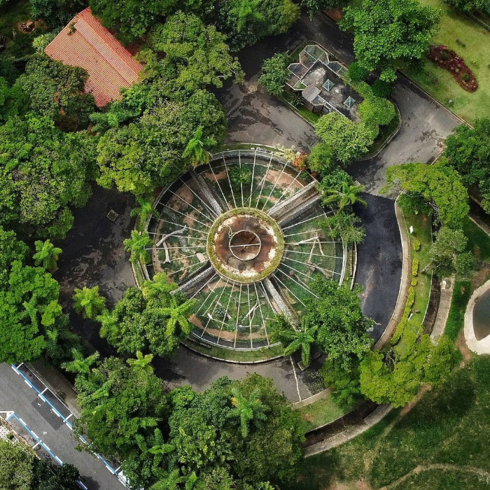
Vila Hortência · Conservação e Lazer
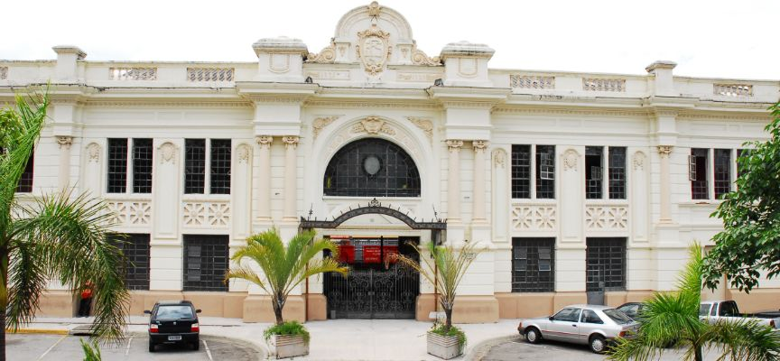
Centro · Patrimônio Histórico

Jardim Abaeté · Ciclovia e Lago
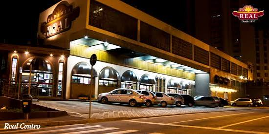
Parque Campolim · Tradição desde 1957

Campolim / Mangal · Culinária Japonesa
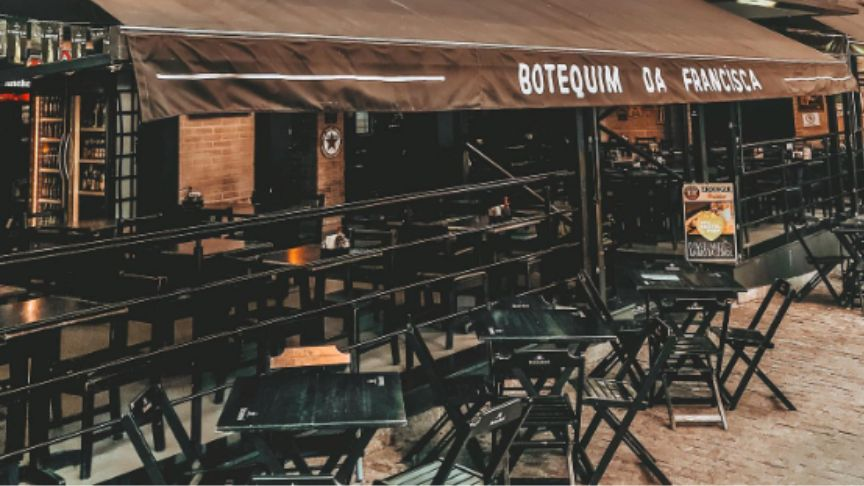
Vila Independência · Boteco Premiado
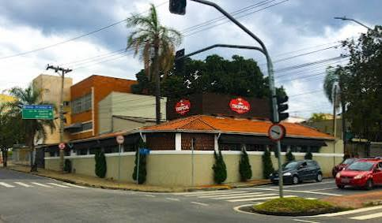
Jardim Faculdade · Carnes Nobres
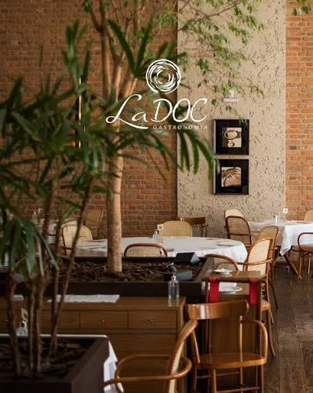
Centro · Cozinha Italiana
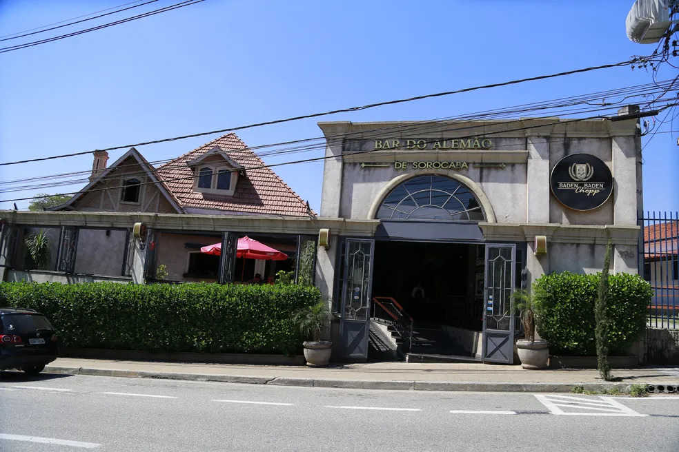
Iguatemi Esplanada · Tradicional Parmegiana
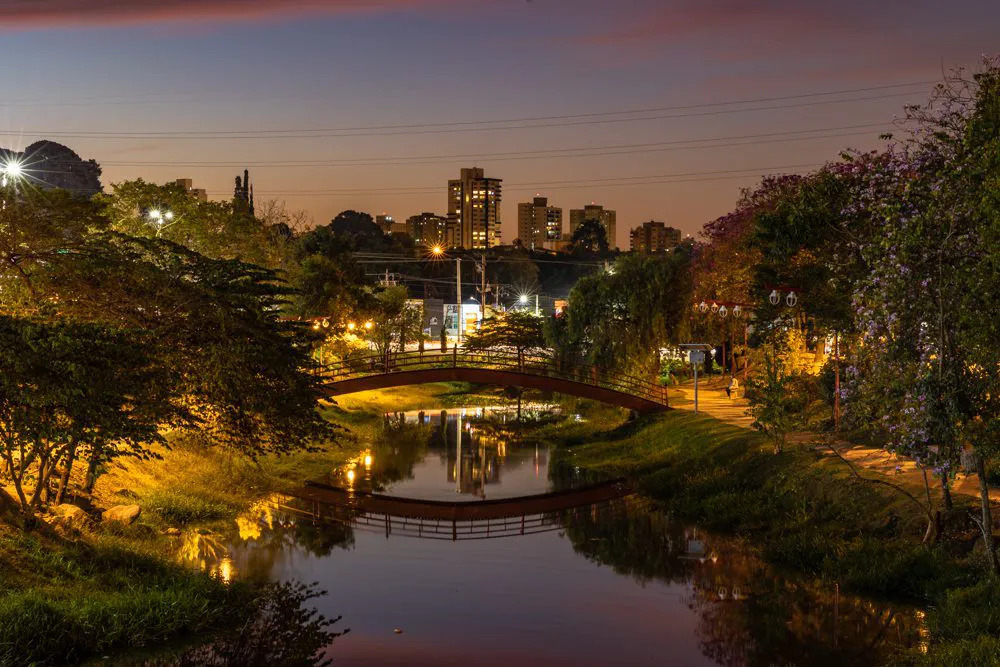
Parque Campolim · Caminhada e Esporte

Centro Histórico · Fundação 1660
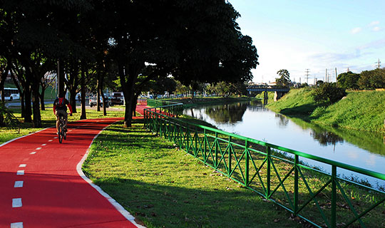
Marginal Dom Aguirre · 130 km de ciclovias
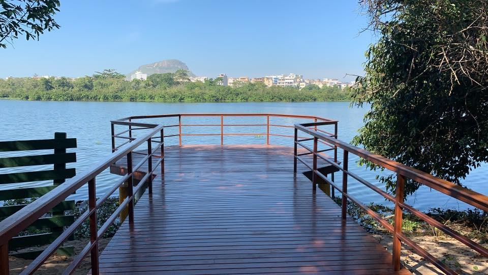
Alto da Boa Vista · Trilhas e Natureza
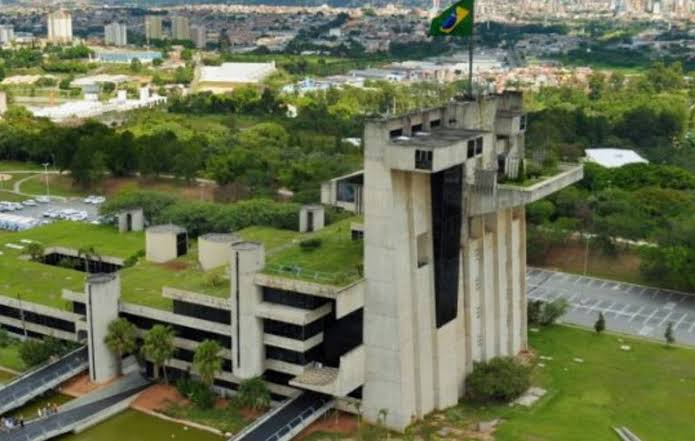
Alto da Boa Vista · Palácio dos Tropeiros
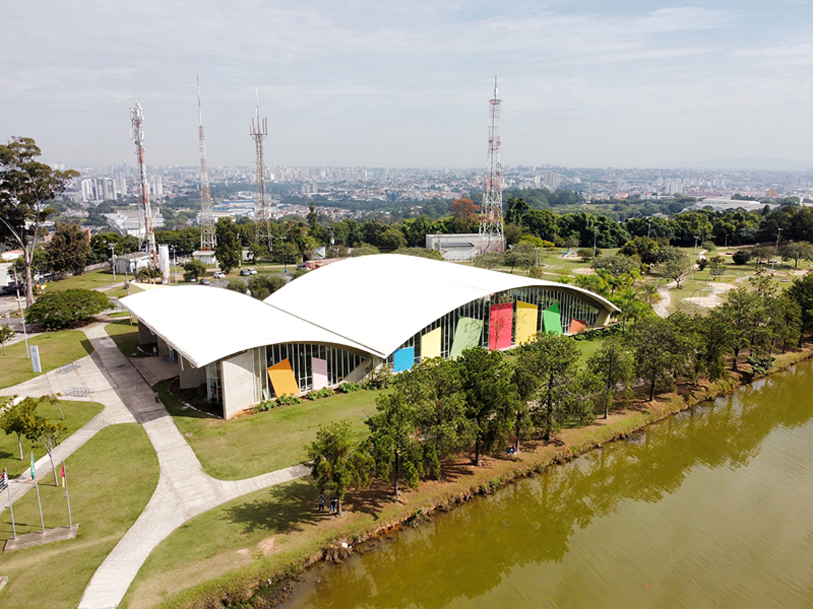
Centro · Casarão Cultural
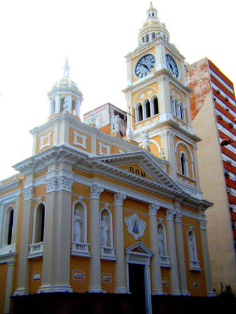
Praça Cel. Fernando Prestes · Centro
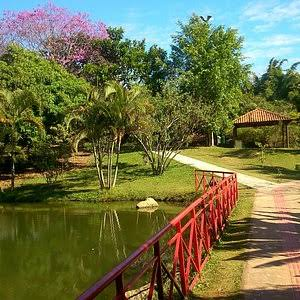
Jardim Vergueiro · Nascente Histórica
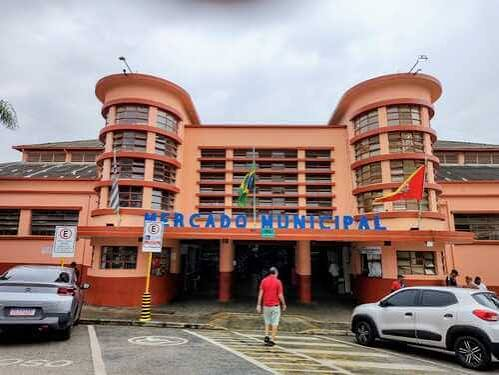
Centro · Tradição desde 1938
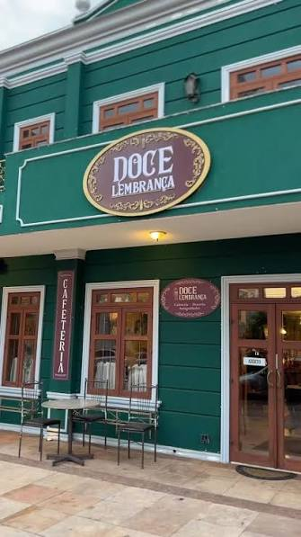
Zona Sul · Cafés Especiais